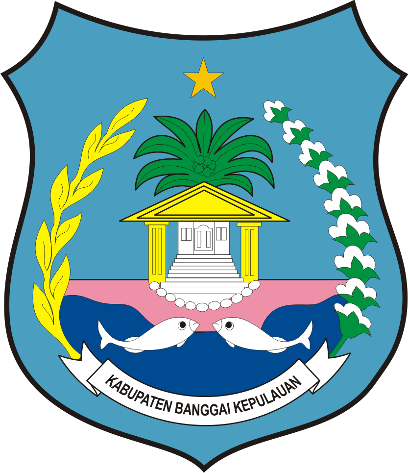

Sertifikat Kompetensi Kerja (SKK)
Informasi persyaratan dan alur pembuatan SKK.
Lihat Informasi
Informasi resmi layanan jasa konstruksi, sertifikasi, perizinan usaha, regulasi, dan penyewaan alat berat.
Bidang Jasa Konstruksi merupakan bagian dari Dinas Pekerjaan Umum dan Penataan Ruang Kabupaten Banggai Kepulauan yang bertugas melaksanakan pembinaan, pengawasan, dan pengelolaan penyelenggaraan jasa konstruksi di daerah.
Terwujudnya penyelenggaraan jasa konstruksi yang tertib, berkualitas, berdaya saing, dan berkelanjutan di Kabupaten Banggai Kepulauan.
Informasi persyaratan dan alur pembuatan SKK.
Lihat InformasiPanduan pendaftaran dan pembinaan badan usaha jasa konstruksi.
Lihat InformasiKumpulan undang-undang, peraturan pemerintah, dan regulasi teknis bidang jasa konstruksi.
Lihat PeraturanInformasi penerapan K3 konstruksi, standar keselamatan, dan kewajiban pelaku jasa konstruksi.
Lihat InformasiInformasi ketersediaan, jenis, dan tata cara peminjaman alat berat milik pemerintah daerah.
Lihat DetailAkses peta dan database jasa konstruksi untuk melihat sebaran tenaga kerja, badan usaha, dan informasi konstruksi daerah.
Lihat Pemetaan